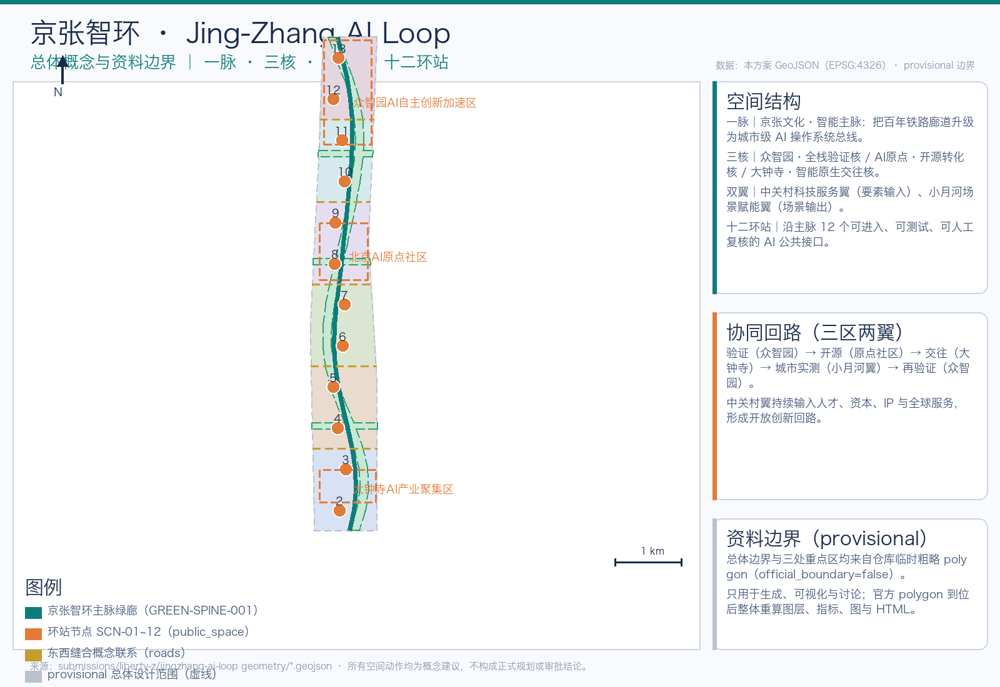
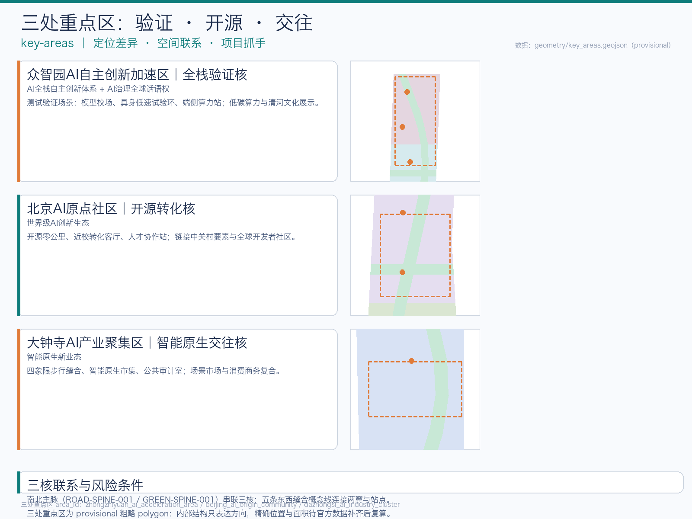
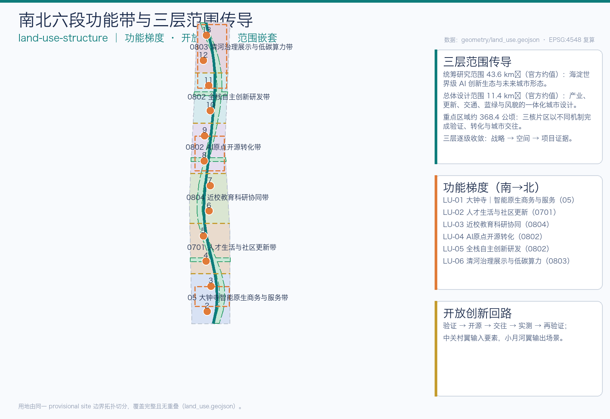
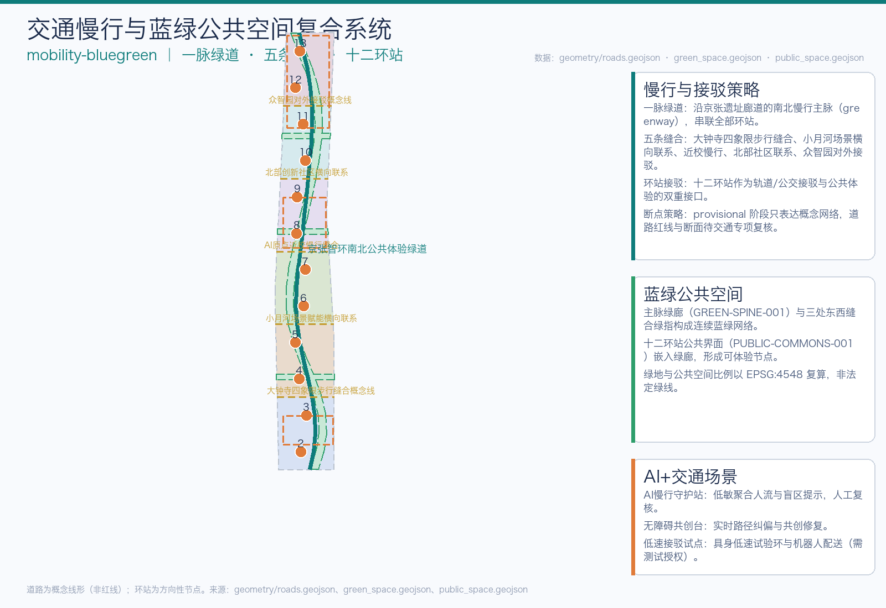

把百年京张铁路廊道升级为城市级 AI 操作系统总线：一脉 · 三核 · 双翼 · 十二环站，形成“验证—开源—交往—实测”开放创新回路。
总体概念：一脉（京张文化·智能主脉）、三核（众智园验证核／AI 原点开源核／大钟寺交往核）、双翼（中关村科技服务翼／小月河场景赋能翼）、十二环站。边界与三处重点区均为 provisional 粗略 polygon，仅用于展示与讨论。

统筹研究范围约 43.6 km² → 总体设计范围约 11.4 km² → 重点区域约 368.4 公顷，逐级收敛为空间与项目证据。总体设计范围面积以 EPSG:4548 复算。
三处重点区分别承担“验证—开源—交往”的回路职能；内部结构均为方向性设计，待官方 polygon 与现状数据补齐后重算。

| 重点区 | 核 | 公告约面积 | 核心抓手 |
|---|---|---|---|
| 众智园 AI 自主创新加速区 | 全栈验证核 | 192.1 ha | 模型校场、具身低速试验环、端侧算力、验证穹顶 |
| 北京 AI 原点社区 | 开源转化核 | 104.3 ha | 原点零公里柱、近校转化客厅、人才协作站 |
| 大钟寺 AI 产业聚集区 | 智能原生交往核 | 72.0 ha | 四象限缝合、智能原生市集、公共审计室、智环客厅 |
用地按南北六段组织功能梯度：大钟寺智能原生商务与服务 → 人才生活与社区更新 → 近校教育科研协同 → AI 原点开源转化 → 全栈自主创新研发 → 清河治理展示与低碳算力。

“一脉五横十二站”：南北公共体验绿道 + 五条东西缝合概念线 + 十二环站接驳接口。道路均为概念线形，非道路红线。
| 要素 | 类型 | 作用 |
|---|---|---|
| ROAD-SPINE-001 | 绿道（greenway） | 南北公共体验主脉，串联全部环站 |
| ROAD-CROSS-001~005 | 接驳/慢行 | 大钟寺四象限缝合、小月河横向联系、近校慢行、北部社区联系、众智园对外接驳 |
主脉绿廊 + 三处东西缝合绿指构成连续蓝绿网络；十二环站公共界面嵌入绿廊，形成可体验、可测试、可人工复核的共享客厅。

绿地与公共空间为概念布局，非法定绿线、蓝线或广场用地；比例仅用于方案内部复算。
18 个可逆更新载体原型：保留对象集中于文保与现状质量较高区域，改造对象为可逆产业载体，新建对象集中于功能带内的研发、服务与文化节点。
更新项目分五类：环站改造、绿廊贯通、建筑载体更新、接驳设施、场景试点，对应三阶段概念分期（试点→网络→固化）。
| 阶段 | 范围 | 重点 |
|---|---|---|
| 阶段一 先行开放与原型试点 | 南段（大钟寺至原点） | 低风险场景与公共体验优先开放 |
| 阶段二 协同更新与网络成形 | 中段（原点社区及周边） | 现状调查完成后连成网络 |
| 阶段三 平台固化与治理迭代 | 北段（众智园及清河） | 规则、审计与公共知识版本化 |
十二张场景卡对应十二环站，其中三张为 AI 产业测试验证场景（模型校场、具身低速试验环、城市数据沙箱）；高风险场景须人工批准、现场接管、日志审计与公开申诉。
| 编号 | 场景 | 空间 | 类型 |
|---|---|---|---|
| SC-01 | 原点零公里导览智能体 | SCN-01 | 公共体验 |
| SC-02 | 模型校场·基准评测 | SCN-02 | 测试验证 |
| SC-03 | 具身低速试验环 | SCN-03 | 测试验证 |
| SC-04 | 城市数据沙箱 | SCN-04 | 测试验证 |
| SC-05 | AI 慢行守护 | SCN-05 | 交通服务 |
| SC-06 | 无障碍路径共创台 | SCN-06 | 公共服务 |
| SC-07 | 京张记忆译站 | SCN-07 | 文化导览 |
| SC-08 | 近校成果转化客厅 | SCN-08 | 产业服务 |
| SC-09 | 人才生活协作站 | SCN-09 | 公共服务 |
| SC-10 | 智能原生市集 | SCN-10 | 商业交往 |
| SC-11 | 公共审计室 | SCN-11 | 治理 |
| SC-12 | 全球 AI 会客厅 | SCN-12 | 国际交往 |
已知指标全部以 EPSG:4548 复算并披露公式；官方控制（FAR、高度）缺失，标注待确认。
compliance_matrix.json 覆盖公告 1.3/1.4/1.5 全部必选任务与面向智能体任务书 agent.1~agent.6。
通过自检仅代表具备机器检查与内容评审基础，不代表方案优秀、可建或获批。provisional 边界保留精度警示。